Honoured to be featured by my undergraduate alma mater, the North Eastern Regional Institute of Science and Technology (NERIST), in its Alumni Spotlight series. The post highlights my path from B.Tech (Electronics and Communication Engineering, Class of 2004) through doctoral and postdoctoral research to my current role as Marie Skłodowska-Curie Fellow at Imperial College London, leading CASREx on cable-driven soft exosuits for upper-arm rehabilitation. [LinkedIn post]
D. Bhattacharya. "SFIL: Safety Filtering for Imitation Learning on Series-Elastic Cable Arms under Co-Contraction" has been submitted to IEEE Robotics and Automation Letters (RAL). The work proposes a safety filter for imitation learning on series-elastic cable-driven arms, enforcing safe behaviour under co-contraction during learned policy execution.
W. Wang, D. Bhattacharya, A. Kobayashi, A. Seino, F. Tokuda, N.C. Tien, and K. Kosuge. "Automated Fabric Alignment Using Global-Local Optimization and Point Cloud Registration" has been accepted for publication in IEEE Transactions on Automation Science and Engineering (T-ASE). The work presents an automated fabric alignment system using Global-Local Weighted ICP (GLW-ICP) for millimeter-level alignment of fabric edges and sewing lines under partial visibility, validated on real garment-manufacturing scenarios. [Paper] [arXiv] [Video] [Project Website]
D. Bhattacharya*, K. Tang*, X. Hang, F. Tokuda, N. Tien, and K. Kosuge. "RTFF: Random-to-Target Fabric Flattening Policy Using Dual-Arm Manipulator" has been accepted to the 2026 IEEE/RSJ International Conference on Intelligent Robots and Systems (IROS 2026), September 27–October 1, 2026, Pittsburgh, PA, USA. The work introduces a dual-arm RTFF policy combining template mesh-based fabric state estimation, a hybrid imitation-learning and visual-servoing framework, and a Mesh Action Chunking Transformer (MACT), validated on a real platform with zero-shot generalization across fabric types. (*Equal contribution) [Paper] [Code & Dataset] [Video] [Complete Lecture] [Project Website]
Attended the second in-person session of the European Talent Academy (ETA) 2026 in Munich (June 16–18, 2026) at TUM — grant-writing workshops with scientifyRESEARCH, 3-minute research pitches, joint team proposals on smarter and healthier cities, and career sessions on leadership, funding, and the path from PhD to PI.
Took part in the highly competitive European Talent Academy (ETA) 2026 London session (March 18–20, 2026) at Imperial College London — connecting with early-career researchers from across Europe, exchanging ideas, and exploring interdisciplinary collaboration opportunities.
View full blog post with 4 photos →
🌟
March 12th, 2026 | Research Milestone — RoSE Foundation Cited in Nature Communications 🌟
A milestone for my doctoral research direction: Kilroy et al. published
“A Soft-Robotic Biomimetic Benchtop Model for Esophageal Motility Simulation”
in Nature Communications (12 March 2026), presenting the RoboGullet+ platform for esophageal motility, stent migration, achalasia simulation, and bolus-transit studies.
[Nature paper]
RoSE (my work, 2021): An early pneumatic soft-robotic esophagus for controlled in vitro endoprosthetic stent testing—programmable peristaltic waves, stent radial-force and migration measurement, and manometry-based swallow signatures.
[RoSE DOI] [arXiv] [Project Website]
RoboGullet+ (2026): Builds on this foundation by citing RoSE and adopting its circumferential pneumatic design, while advancing the field with independent longitudinal–circumferential muscle actuation, biohybrid porcine tissue lining, and simulation of normal and diseased motility (including achalasia types I–III).
The 2026 study reports, for example, that stent migration can increase more than fivefold when longitudinal muscle movement is included versus circumferential actuation alone—highlighting why the earlier RoSE focus on physiologically structured benchtop stent evaluation remains scientifically relevant.
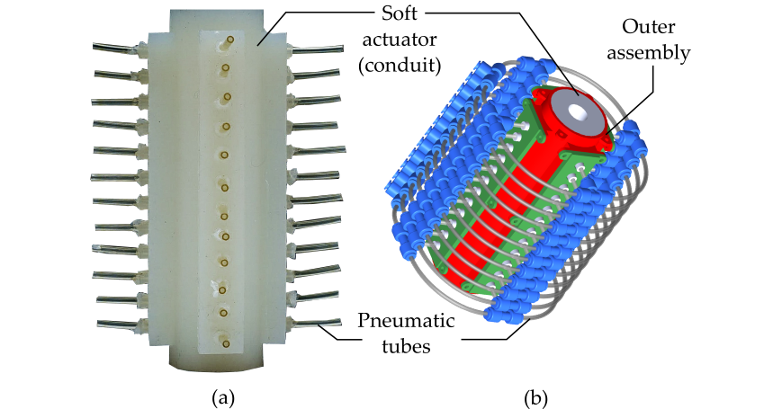
RoSE platform structure (2021)
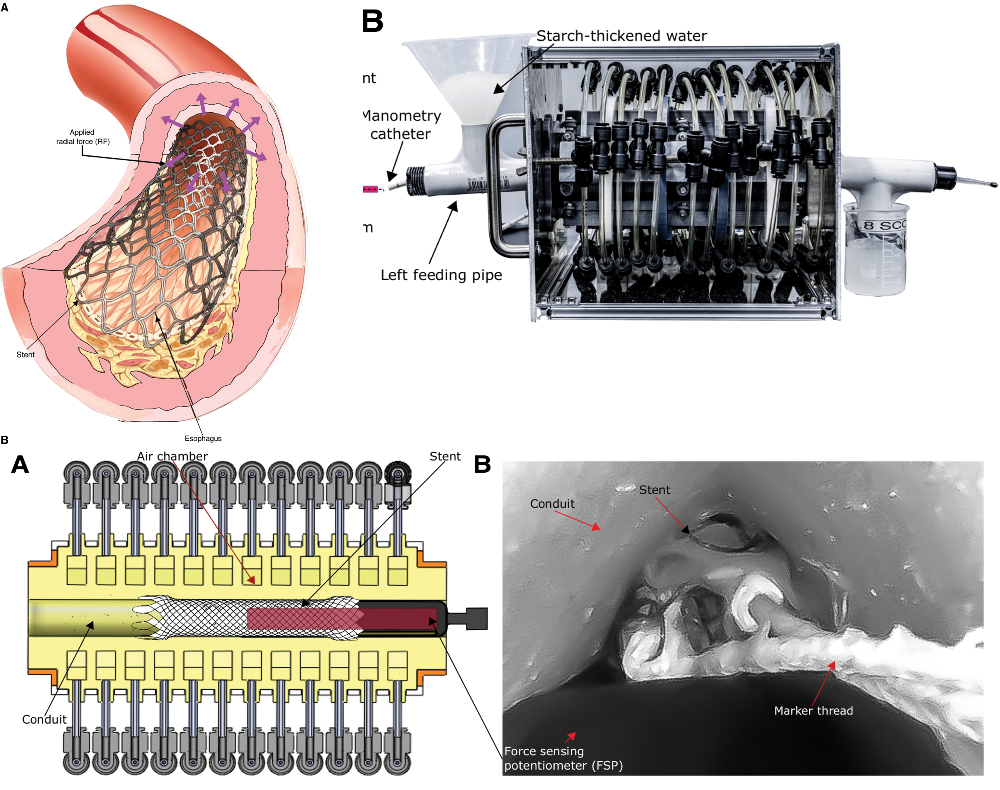
RoSE stent testing (2021)
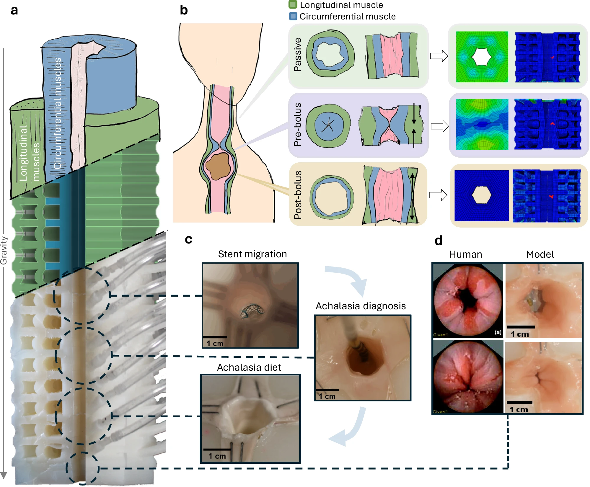
Nature Communications (2026)
👨🎓
March 2026 | Supervising Year 3 Dyson School of Design Placement Students 🎓
Supervising two Year 3 Dyson School of Design Engineering placement students: Ben Surtees and Lijiangke Liu. Both students commenced their placement in March 2026. Working on research and development projects related to exosuit development.
Attended NVIDIA Robotics Day 2026, a full-day symposium hosted by the School of Convergence Science, Human and Artificial Intelligence at Imperial College London. The event brought together leading researchers from Imperial and experts from NVIDIA for an immersive exploration of embodied intelligence.
View full blog post with 37 photos →
February 5th, 2026 | Invited Departmental Seminar: Learning-Based Fabric Manipulation with Mesh Perception and Visual Servoing, Dyson School of Engineering 🎤
📄
January 31st, 2026 | IEEE RAL Paper Accepted for Presentation at IEEE ICRA 2026, Vienna 🎉
B. Jin*, A. Kobayashi*, D. Bhattacharya, A. Seino, F. Tokuda, N.C. Tien, and K. Kosuge. "Automated Straight-line Sewing of Stretchable Fabrics with Different Lengths" has been accepted for presentation at the 2026 IEEE International Conference on Robotics and Automation (ICRA 2026), June 1–5, 2026, Vienna, Austria. (*Equal contribution) [Link] [arXiv] [Video]
January 29th, 2026 | Invited Talk on Learning-based Fabric Manipulation with Mesh Perception and Visual Servoing, Imperial Robotics Postgrad Committee 🎤
Delivered an invited talk on "Learning-based Fabric Manipulation with Mesh Perception and Visual Servoing" at the invitation of the Imperial Robotics Postgrad Committee, Imperial College London. The presentation covered advanced techniques for automated fabric manipulation using mesh-based perception and visual servoing approaches in robotics. [Video]
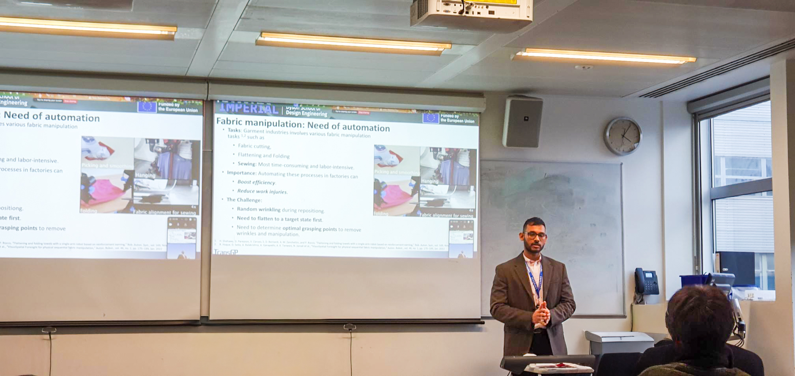
🤖
January 28th, 2026 | Lecture on Robotics Simulation and Control using PyDrake - DESE71002 Robotics Research Projects, Dyson School of Engineering, Imperial College London 🎓
Delivered an educational tutorial on robotics simulation and control using PyDrake for DESE71002 Robotics Research Projects (RRP), Dyson School of Engineering, Imperial College London. The lecture covered the complete workflow from CAD design (Onshape) to physics-based simulation and control implementation. Topics included URDF-based robot modeling, physics simulation with MultibodyPlant, 3D visualization using Meshcat, and LQR control implementation using a pendulum example. [GitHub] [GitHub Comprehensive] [Presentation] [Lecture Notes] [Lecture Resources] [Video]
January 15th, 2026 | Appointed as Assistant Supervisor, Dyson School of Design Engineering, Imperial College London 🎓
Appointed as Assistant Supervisor in the Dyson School of Design Engineering, Faculty of Engineering, Imperial College London. The appointment commenced on 15 January 2026 and will run until further notice.
Selected to participate in the prestigious European Talent Academy 2026. This initiative aims to improve collaborations between universities (Imperial College London, Technical University of Munich (TUM), and Politecnico di Milano (PoliMi)) and to support career progression by providing networking, leadership development, and training opportunities, along with funding support.
Excited to begin my MSCA Postdoctoral Fellowship on "CASREx: Cable-driven Arm Soft Re-configurable Exoskeleton for Muscle Impairment Rehabilitation" under the supervision of Prof. Thrishantha Nanayakkara at the Morph Lab, Dyson School of Engineering, Imperial College London. This 24-month highly prestigious fellowship is funded by Horizon Europe.
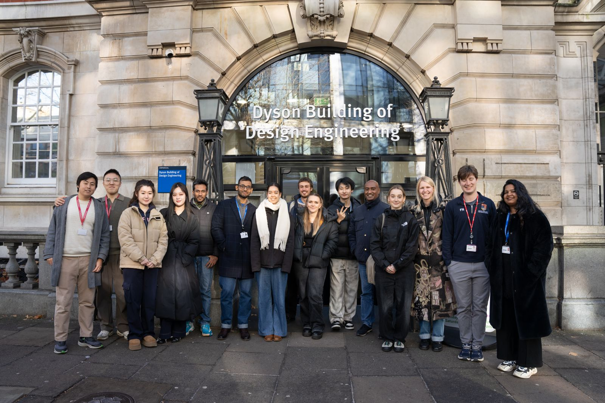
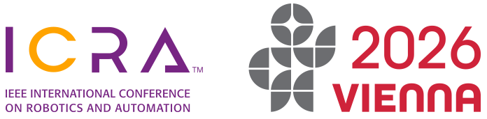
October 10th, 2025 | Paper Submitted to IEEE ICRA 2026 🎉
Our paper "RTFF: Random-to-Target Fabric Flattening Policy Using Dual-Arm Manipulator" has been submitted to the IEEE International Conference on Robotics and Automation (ICRA) 2026. This work focuses on automated fabric manipulation using dual-arm robotic systems. (Subsequently accepted at IROS 2026, June 17, 2026.) [arXiv] [Code & Dataset] [Project Website] [Video]
Invited Speaker at the World Robotics Conference (WRC 2025), Beijing, China. Presented research on "Fabric modeling and perception for garment manufacturing," exploring robotics and AI solutions for fabric representation, simulation, and real-world applications.
Exhibited the Smart 3D Sewing System at the 10th World Robot Conference (WRC 2025) in Beijing — the largest robotics exhibition in China. Representing the Center for Transformative Garment Production (TransGP), our team demonstrated an end-to-end automated sewing pipeline combining dual-arm robotic handling, real-time fabric perception, and 3D seam planning. TransGP's spin-off company, SewingDX Limited, showcased the commercial pathway from research prototype to factory-floor deployment, highlighting the growing industry demand for autonomous garment manufacturing.
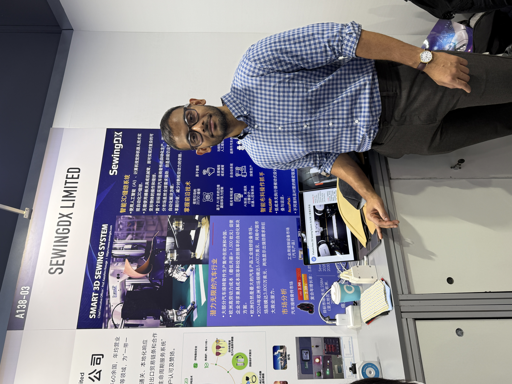
View full blog post with 43 photos →
🇨🇳
August 3rd, 2025 | Workshop Organization and Presentation at IEEE ICMA 2025 🎤
Organized and presented at the Workshop on Robotics for Automated Garment Production at IEEE International Conference on Mechatronics and Automation (ICMA 2025), Beijing Empark Grand Hotel, Beijing, China. Presentation topic: "Mesh-based Fabric State Estimation and Manipulation."
Recipient of the prestigious Marie Skłodowska-Curie Postdoctoral Fellowship for the project "CASREx" (Grant No. 101205678) hosted at Imperial College London. The fellowship is funded under HORIZON-MSCA-2024-PF-01-01 for 24 months (EUR 276,187.92).
🇭🇰
2023 | Co-authored Innovation and Technology Fund (ITF) Partnership Research Program Grant 💰
Co-authored Innovation and Technology Fund (ITF) Partnership Research Program (PRP) grant for collaborative research initiatives in Hong Kong.
🇬🇧
May 29–June 3rd, 2023 | Poster Presentation at IEEE ICRA 2023, London 📊
Presented a poster at the IEEE International Conference on Robotics and Automation (ICRA) 2023, ExCeL London, United Kingdom — one of the premier robotics conferences showcasing cutting-edge research in robotics and automation.
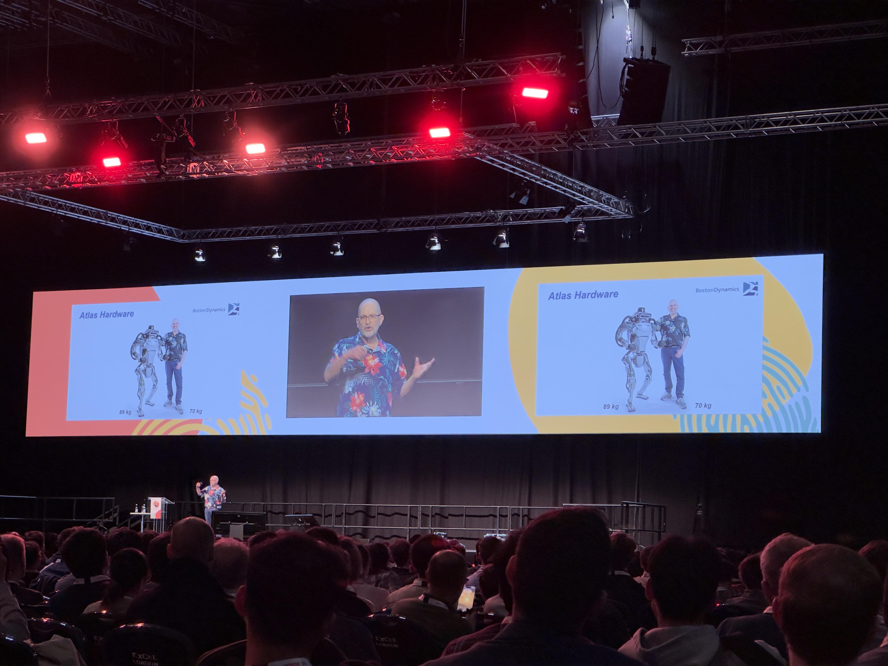
View full blog post with 7 photos →
🇭🇰
2022 | Co-authored Research Talent Hub for ITF Project Grant 💰
Co-authored Research Talent Hub for ITF project (RTH-ITF) grant supporting research talent development in Hong Kong.
🇨🇭
2018 | Awarded Research Grant from BvW Holding, Switzerland 🏆
Recipient of research grant for "Dynamic testing of implant stents using Robotic Soft Esophagus (RoSE)" from BvW Holding, Cham, Switzerland (39,000 NZD, 1 year).
🇳🇿
2018, 2019 | Awarded Riddet Travel Grants 🎓
Recipient of Riddet Travel grants from Riddet Institute Centre of Research Excellence (3,000 NZD).
🇳🇿
2019--2020 | Doctor of Philosophy Scholarship, University of Auckland 🎓
Recipient of Doctor of Philosophy Scholarship from University of Auckland.
🇳🇿
2016--2019 | Doctor of Philosophy Scholarship, Riddet Institute 🎓
Recipient of Doctor of Philosophy Scholarship from Riddet Institute Centre of Research Excellence.
🇮🇳
2011--2013 | Masters of Technology Scholarship, MHRD GATE 🎓
Recipient of Masters of Technology Scholarship from Ministry of Human Resource (MHRD) GATE scholarship.
📄
September 2025 | Paper Published in IEEE Robotics and Automation Letters 📚
B. Jin*, A. Kobayashi*, D. Bhattacharya, A. Seino, F. Tokuda, N.C. Tien, and K. Kosuge (2025). "Automated Straight-line Sewing of Stretchable Fabrics with Different Lengths". IEEE Robotics and Automation Letters, pp. 1-8. (*Equal contribution) [Link] [arXiv] [Video]
📄
January 2025 | Paper Published in Mechanism and Machine Theory 📚
D. Bhattacharya, T. K. Cheung, Y. Wang, and D. Lau (2025). "Kinematic and Dynamic Modeling of Cable-Object Interference and Wrapping in Complex Geometrical-Shaped Cable-Driven Parallel Robots". Mechanism and Machine Theory, vol. 214, pp. 106092. [Link] [GitHub] [Video]
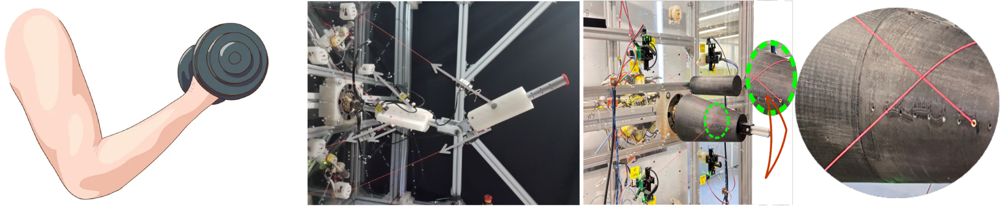
📄
January 2025 | Paper Published in IEEE ICMA 2025 📚
W. Dong, D. Bhattacharya, A. Kobayashi, A. Seino, F. Tokuda, X. Huang, K. Tang, N.C. Tien, and K. Kosuge (2025). "Precise Top-layer Fabric Segmentation for Fabric Destacking with Edge- and Shape-Aware Deep Networks". IEEE International Conference on Mechatronics and Automation (ICMA), pp. 1343-1348.
September 2024--October 2025 | Visiting Research Associate at JC STEM Lab of Robotics for Soft Materials, Hong Kong University 🔬
Visiting Research Associate in the Department of Electrical and Electronic Engineering at Hong Kong University (HKU), conducting research on advanced robotics and control systems.
July 2024--October 2025 | Senior Research Engineer at TransGP 🔬
Served as Senior Research Engineer and Postdoctoral Fellow at the Center for Transformative Garment Production (TransGP) under Prof. Kazuhiro Kosuge. Led multidisciplinary teams developing high-performance models for fabric pre-sewing handling and folding, focusing on physics-based cloth manipulation with policy generated from imitation learning.
👨🎓
2024--2026 | Supervising Kai Tang, University of Hong Kong 🎓
Supervised Kai Tang, a PhD student at The University of Hong Kong, on research projects related to robotics, fabric manipulation, and machine learning. Provided guidance on research methodology, experimental design, and academic writing throughout the supervision period.
🇯🇵
May 13–17, 2024 | Poster Presentation at IEEE ICRA 2024, Yokohama 📊
D. Bhattacharya, Y. Wang, T. K. Cheung, and D. Lau. Poster: Kinematic Modeling of Cable Wrapping in Complex Geometrical Shaped Cable-Driven Parallel Robots. Presented at IEEE International Conference on Robotics and Automation (ICRA 2024), Pacifico Yokohama, Japan. Work introduced cable-wrapping forward/inverse kinematics (CWFK/CWIK) for complex-shaped CDPR links and obstacles; later extended in Mechanism and Machine Theory (2025). [Poster (PDF)] [Journal paper (MMT 2025)] [Code]
🇭🇰
2023 | Delivered Lectures for MAEG5090 Topics in Robotics at CUHK 👨🏫
Delivered lectures for postgraduate course MAEG5090 Topics in Robotics at The Chinese University of Hong Kong. Class strength: 50 students. Covered advanced topics in robotics including cable-driven parallel robots, soft robotics, and robotic control systems.
🇭🇰
March 2021--June 2024 | Postdoctoral Fellow at The Chinese University of Hong Kong 🔬
Postdoctoral Fellow in the Department of Mechanical and Automation Engineering under Prof. Darwin Lau. Conducted research on modeling and control of cable-driven robots with cable wrapping around obstacles and links, and designed cable-driven growing vine robots for safer false ceiling inspections. Mentored undergraduate and postgraduate students and delivered lectures for MAEG5090 Topics in Robotics.
🇫🇷
October 2021--January 2022 | Visiting Postdoctoral Fellow at École Centrale de Nantes 🔬
Visiting Postdoctoral Fellow in Laboratoire des Sciences du Numérique de Nantes (LS2N), École Centrale de Nantes (ECN). Supervisors: Prof. Stephane Caro and Prof. Darwin Lau. Project: Iterative-learning control of cable-driven parallel robot.
🇳🇿
August 2016--April 2021 | Ph.D. in Mechatronics Engineering, The University of Auckland [Thesis]🎓
Pursued Ph.D. in Mechatronics Engineering at The University of Auckland, New Zealand. Research focus: "Robotic Soft Esophagus Design, Modeling, and Control for Endoprosthetic Stent Testing and Food Swallow Investigation". Supervisors: Prof. Weiliang Xu, Prof. Leo K. Cheng, and Dr. Stefan Dirven. Developed innovative soft robotic systems for medical applications, advancing the field of bio-inspired robotics and control systems.
🇳🇿
2017--2020 | Graduate Teaching Assistant at The University of Auckland 👨🏫
Graduate Teaching Assistant for undergraduate courses at The University of Auckland. Courses taught:
• MECHENG 706: Mechatronics Design Project (2017-2019) - 4th year, 30 students
• MECHENG 306: Design of Sensing and Actuating Systems (2018) - 3rd year, 30 students
• ENGGEN 115: Principles of Engineering Design (2017-2019) - 1st year, 60 students
• ENGGEN 131: Introduction to Engineering Computation (2018-2019) - 1st year, 60 students
Responsibilities included supervising undergraduate students for problem solving, delivering tutorial sessions and workshops, managing laboratories, and conducting weekly interviews to monitor students' progress in design projects.
🇳🇿
March 24th, 2021 | Successfully Defended PhD Thesis at The University of Auckland 🎓
Successfully defended PhD thesis titled "Robotic Soft Esophagus Design, Modeling, and Control for Endoprosthetic Stent Testing and Food Swallow Investigation" in Mechatronics Engineering at The University of Auckland. [Thesis]
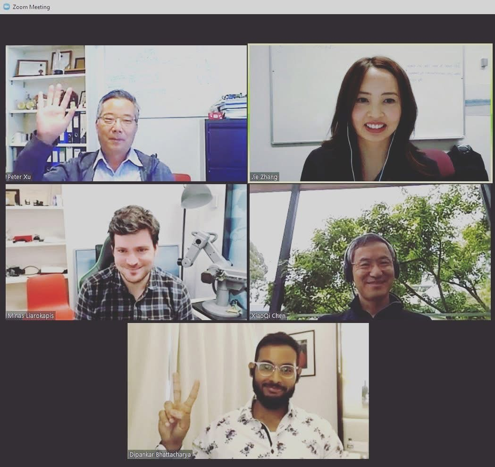
🇳🇿
2019-2020 | Performed SoGut Characterization Experiments at North Shore Hospital 🏥
Performed characterization experiments for SoGut: A Soft Robotic Gastric Simulator at North Shore Hospital, Auckland, as part of collaborative research during PhD studies at The University of Auckland.
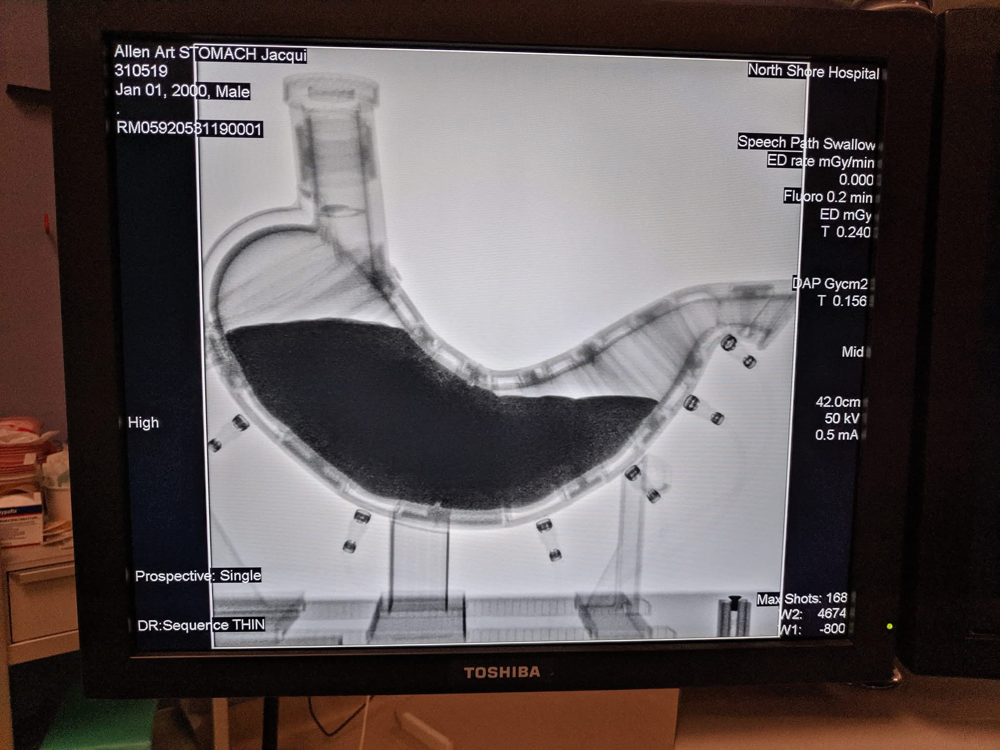
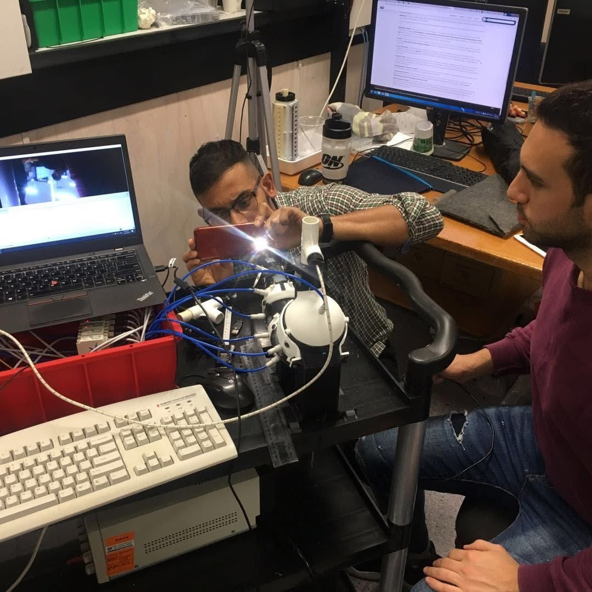
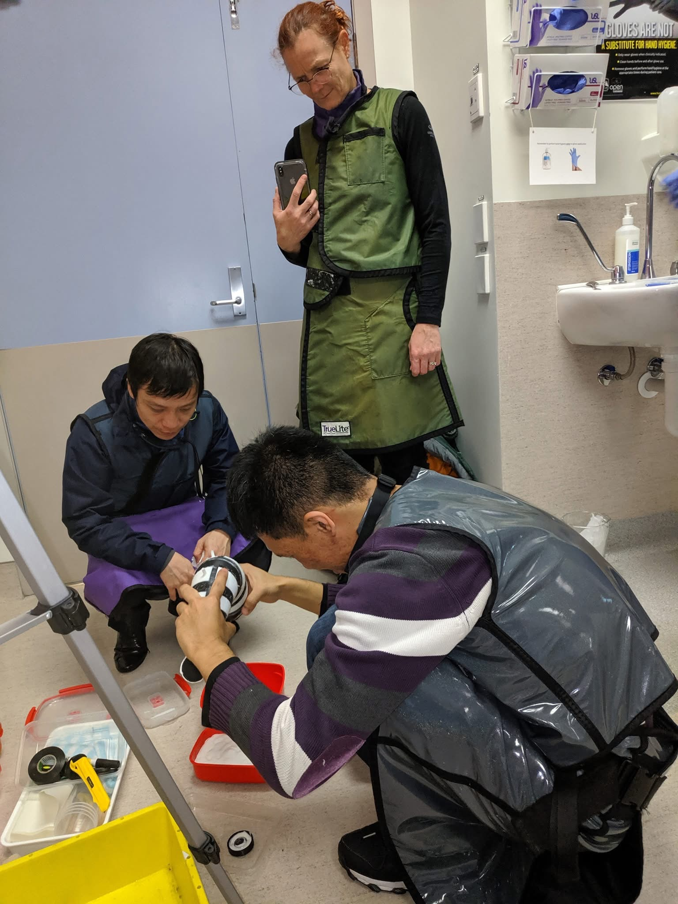
🇳🇿
July 2019 | Poster Presentation at MedTech CoRE Annual Conference 🎤
Presented a poster at the MedTech CoRE (Medical Technologies Centre of Research Excellence) Annual Conference, showcasing research on the Robotic Soft Esophagus (RoSE) for endoprosthetic stent testing and esophageal swallow investigation.
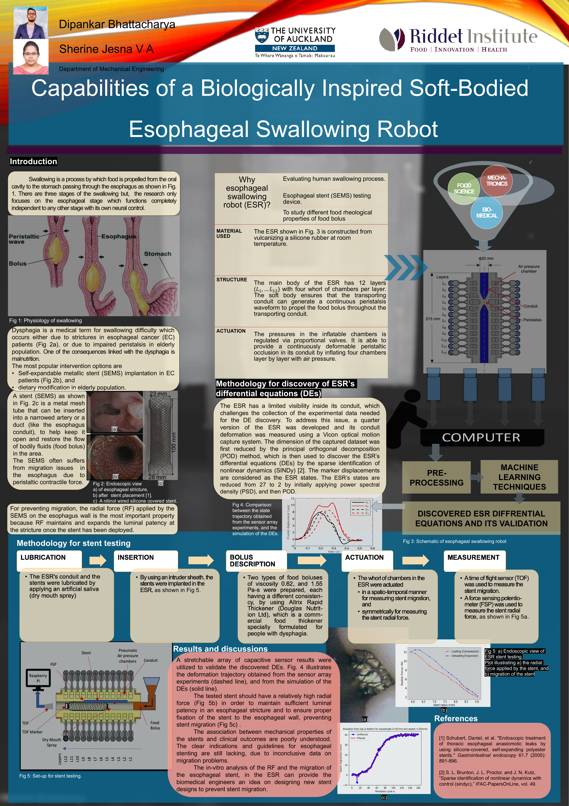
🇳🇿
October 30th, 2018 | Presented at BioMouth 2018 Meet 🎤
Presented research work at the BioMouth 2018 Meet, Auckland, New Zealand.
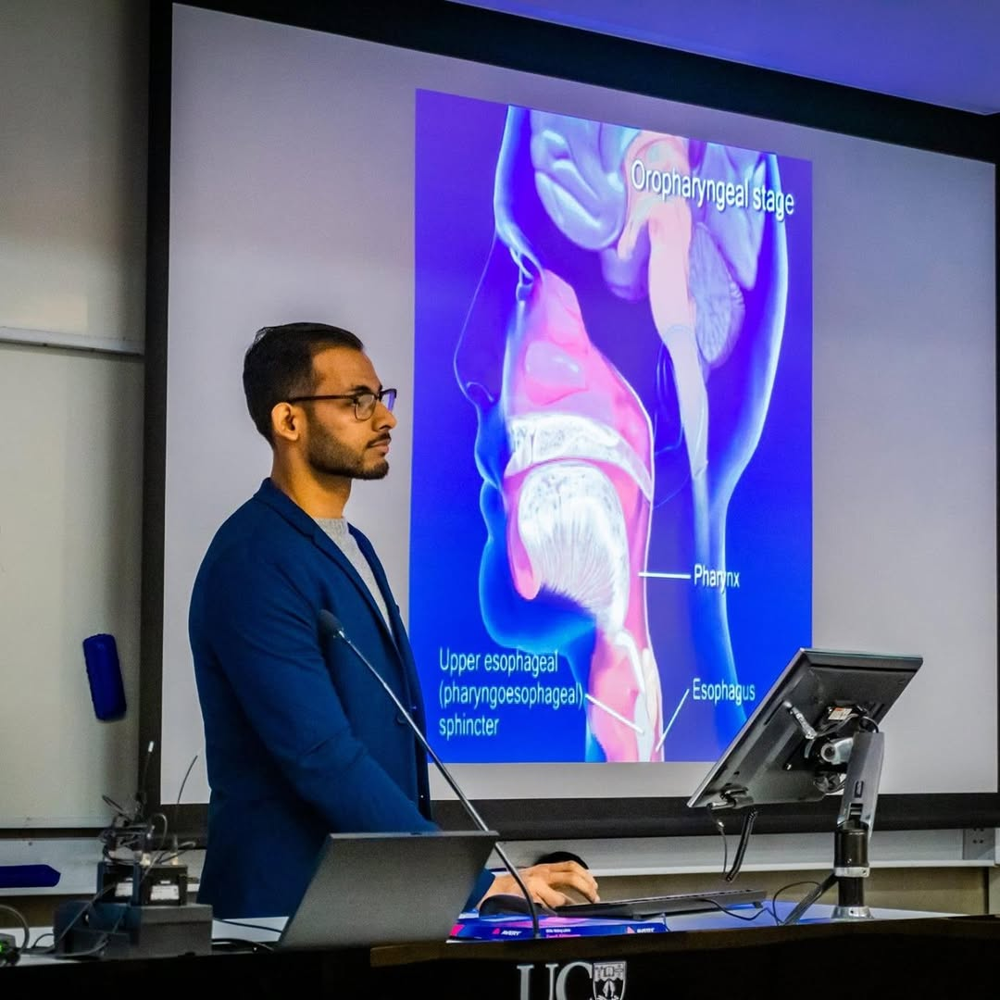
📄
2023 | Paper Published in IEEE Transactions on Control Systems and Technology 📚
D. Bhattacharya, Y. P. Chan, S. Shang, Y. S. Chan, Y. Tan, and D. Lau (2023). "Tri-Space Operational Control of Redundant Multilink and Hybrid Cable-Driven Parallel Robots Using an Iterative-Learning based Reactive Approach". IEEE Transactions on Control Systems and Technology. [Link] [arXiv] [Code]
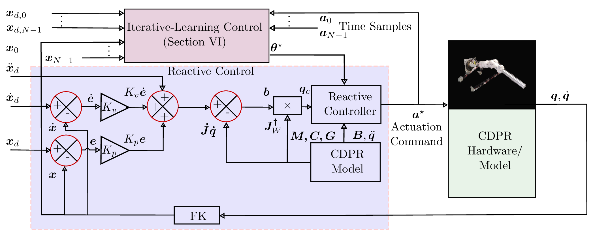
📄
2021 | Paper Published in IEEE Transactions on Industrial Electronics 🎓
D. Bhattacharya, L. K. Cheng, and W. Xu (2021). "Nonlinear Model Predictive Control of a Robotic Soft Esophagus for Endoprosthetic Stent Testing". IEEE Transactions on Industrial Electronics. [Link] [arXiv] [Code (GitHub)] [Project Website]
📄
2021 | Paper Published in Soft Robotics 🎓
D. Bhattacharya, S. Jesna, L. K. Cheng, and W. Xu (2021). "RoSE: A Robotic Soft Esophagus for Endoprosthetic Stent Testing". Soft Robotics. RoSE is an early pneumatic soft-robotic platform for controlled in vitro endoprosthetic stent testing (radial force, migration, and manometry). [RoSE DOI] [arXiv] [Project Website] Subsequent related work: Kilroy et al., Nature Communications (2026) — DOI.
📄
2021 | Paper Published in Soft Robotics 🎓
Y. Dang, Y. Liu, R. Hashem, D. Bhattacharya, J. Allen, M. Stommel, L.K. Cheng, and W. Xu (2021). "SoGut: A Soft Robotic Gastric Simulator". Soft Robotics. [Link] [Video]
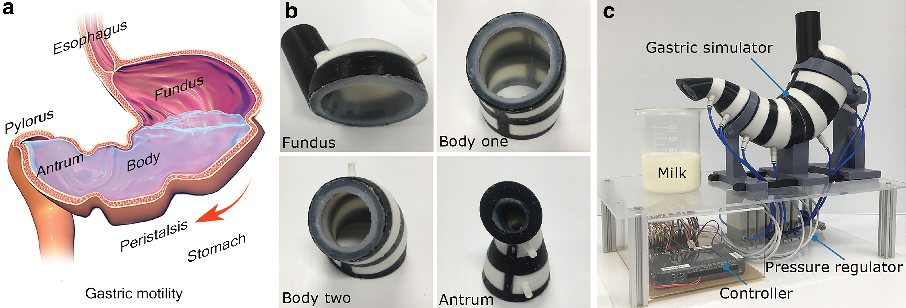
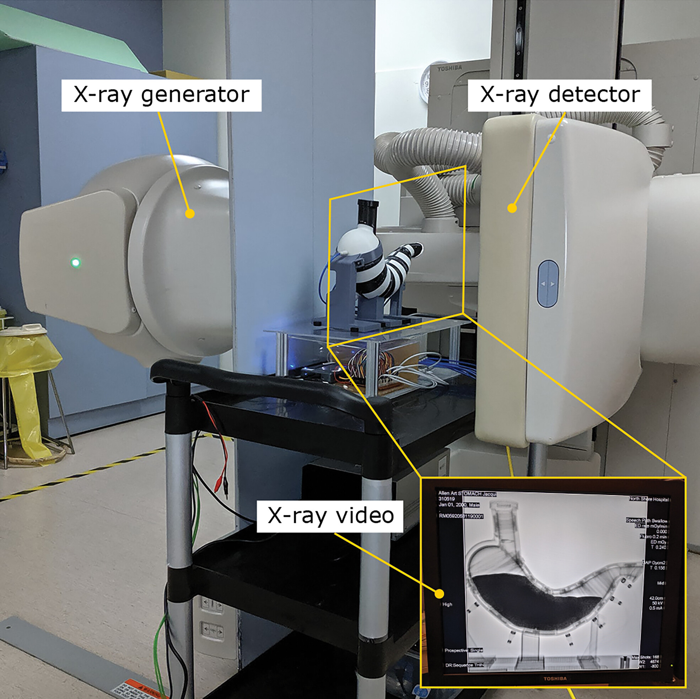
📄
2020 | Paper Published in IEEE Transactions on Industrial Electronics 🎓
D. Bhattacharya, L. K. Cheng, and W. Xu (2020). "Sparse Machine Learning Discovery of Dynamic Differential Equation of an Esophageal Swallowing Robot". IEEE Transactions on Industrial Electronics, vol. 67, no. 6, pp. 4711–4720. [Link]
📖
2019 | Book Chapter Published in RITA 5 📚
D. Bhattacharya, L.K. Cheng, S. Dirven, and W. Xu (2019). "Artificial Intelligence Approach to the Trajectory Generation and Dynamics of a Soft Robotic Swallowing Simulator". Robot Intelligence Technology and Applications (RITA) 5, vol. 751, pp. 3-16, Springer. [Link]
📄
2018 | Paper Published in M2VIP 2018 Conference 🎓
D. Bhattacharya, L.K. Cheng, and W. Xu (2018). "Testing and Analysis of Migration Displacement of a Flared Stent Deployed in an Esophageal Swallowing Robot". 25th International Conference on Mechatronics and Machine Vision in Practice (M2VIP), pp. 1-6. [Link]
📄
2017 | Paper Published in M2VIP 2017 Conference 🎓
D. Bhattacharya, L.K. Cheng, S. Dirven, and W. Xu (2017). "Actuation Planning and Modeling of a Soft Swallowing Robot". 24th International Conference on Mechatronics and Machine Vision in Practice (M2VIP), pp. 1-6. [Link]
🇰🇷
2017 | Best Conference Paper Award at RiTA 2017 🏆
Recipient of Best Conference Paper Award at the 5th International Conference on Robotic Intelligence Technology and Applications (RiTA), Daejeon, Korea.
🇳🇿
2017 | Ranked 2nd in Poster Presentation at DoF 2017 Conference 🏆
Ranked 2nd in poster presentation at the Delivery of Functionality in Complex Food Systems (DoF 2017) Conference.
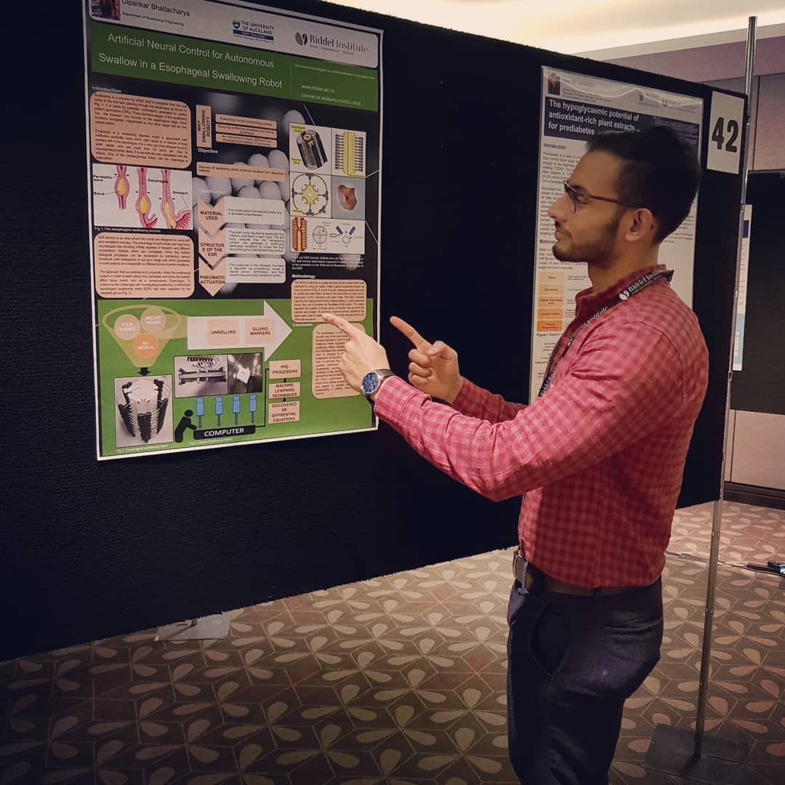
📄
2015 | Paper Published in International Journal of Sustainable Energy 🎓
D. Bhattacharya, M.G. Nisha, and G.N. Pillai (2015). "Relevance Vector-Machine-Based Solar Cell Model". International Journal of Sustainable Energy, vol. 34, no. 10, pp. 685-692. [Link]
🇳🇿
January 2018--January 2019 | Research Assistant at The University of Auckland 🔬
Research Assistant under the direction of Prof. Peter Xu, working on measuring stent migration for esophageal stents of various designs, developing actuation protocols for soft-esophageal robots, and conducting experimental validation studies.
🇮🇳
July 2013--June 2016 | Teaching at Galgotia's University 👨🏫
Delivered lectures for undergraduate and postgraduate courses at Galgotia's University, School of Electrical, Electronics and Communication Engineering. Courses taught:
• BECE2010: Digital Electronics - 2nd year undergraduate, 60 students
• BECE2016: Signals and Systems - 2nd year undergraduate, 60 students
• BTEE2002: Network Analysis and Synthesis - 2nd year undergraduate, 60 students
• BEEE3002: Control Systems - 3rd year undergraduate, 60 students
• BEEE2001: Electrical Measurement and Instrumentation - 2nd year undergraduate, 60 students
• BECE3020: Digital Signal Processing - 3rd year undergraduate, 60 students
• BTEE3019: Advanced Control System - 3rd year undergraduate, 60 students
• BEEE5004: Digital Control - 1st year postgraduate, 20 students
Responsibilities included developing teaching materials, supervising final year undergraduate projects, and managing laboratory sessions.
🇮🇳
July 2013--June 2016 | Lecturer (Assistant Professor) at Galgotia's University 🎓
Lecturer (Assistant Professor Grade-1) in School of Electrical, Electronics and Communication Engineering (SEECE). Delivered lectures for undergraduate and postgraduate courses, developed teaching materials, supervised final year undergraduate projects, and managed laboratory sessions.
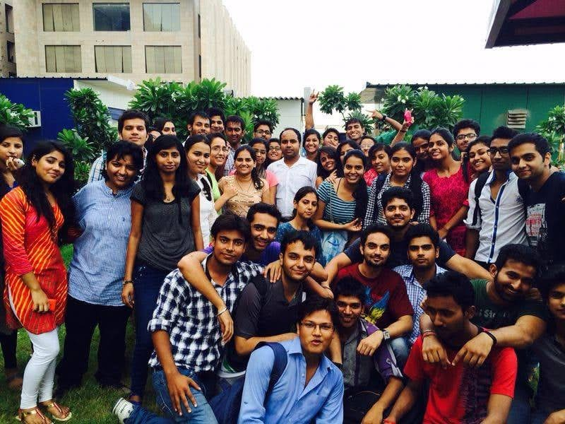
🇮🇳
July 2011--July 2013 | M.Tech in Systems and Control, Indian Institute of Technology (IIT) Roorkee 🎓
Pursued Masters of Technology (M.Tech) in Systems and Control Engineering at Indian Institute of Technology (IIT) Roorkee. Recipient of Ministry of Human Resource Development (MHRD) GATE scholarship.
🇮🇳
July 2004--June 2010 | B.Tech in Electronics and Communication Engineering, NERIST 🎓
Pursued Bachelor of Technology (B.Tech) in Electronics and Communication Engineering at North Eastern Regional Institute of Science and Technology (NERIST), Arunachal Pradesh.